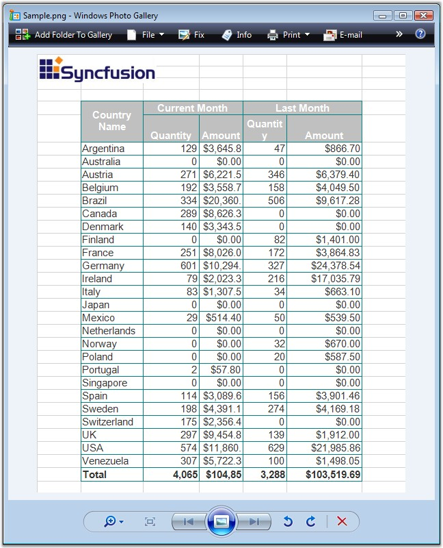
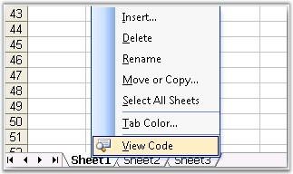

Excel has options to consolidate data from different worksheets, or move a sheet to another workbook, or insert a sheet in between the worksheets. Also, the sheet tab color can be formatted, and the sheets can be named as per the users needs. This section explains how sheets can be organized. Below sections explains the XlsIO's ability to organize sheets.
· Copy/Move Worksheet-This section explains how a worksheet can be copied from another worksheet with or without certain formatting.
· Sheet Format-This section explains various formats that can be applied to a sheet.
When you copy/move rows and columns, Microsoft Excel copies or moves all the data that it contains, including formulas and their resulting values, comments, cell formats, and hidden cells.
Copying Worksheets
Copying worksheets can be internal or external. XlsIO provides support for copying a worksheet within a workbook, and also from one workbook to another. This feature can be used to merge together several workbooks. Following code example illustrates how to copy a sheet with its entire contents to another sheet.
|
[C#]
// Open the Source WorkBook. IWorkbook sourceWorkbook = application.Workbooks.Open(@"..\..\..\..\..\Data\SourceWorkbookTemplate.xls");
// Open the Destination WorkBook. IWorkbook destinationWorkbook = application.Workbooks.Open(@"..\..\..\..\..\Data\DestinationWorkbookTemplate.xls");
// Copy the first worksheet from the Source workbook to the destination workbook. destinationWorkbook.Worksheets.AddCopy(sourceWorkbook.Worksheets[0]);
// Activate the newly added worksheet in the destination workbook. destinationWorkbook.ActiveSheetIndex = 1;
// Saving the workbook to disk. destinationWorkbook.SaveAs("Sample.xls");
// Close the workbook. destinationWorkbook.Close(); |
|
[VB.NET]
' Open the Source WorkBook. Dim sourceWorkbook As IWorkbook = application.Workbooks.Open("..\..\..\..\..\Data\SourceWorkbookTemplate.xls")
' Open the Destination WorkBook. Dim destinationWorkbook As IWorkbook = application.Workbooks.Open("..\..\..\..\..\Data\DestinationWorkbookTemplate.xls")
' Copy the first worksheet from the Source workbook to the destination workbook. destinationWorkbook.Worksheets.AddCopy(sourceWorkbook.Worksheets(0))
' Activate the newly added worksheet in the destination workbook. destinationWorkbook.ActiveSheetIndex = 1
' Saving the workbook to disk. destinationWorkbook.SaveAs("Sample.xls")
' Close the workbook. destinationWorkbook.Close() |
You can also specify copy options while copying a worksheet, if you are interested in improving the performance, and if you are interested in ignoring certain formatting while copying through the ExcelWorksheetCopyFlags enumerator. Following are the values for this enumerator.
|
Member name |
Description |
|
None |
No flags. |
|
ClearBefore |
Represents the ClearBefore copy flags. |
|
CopyNames |
Copies Names. |
|
CopyCells |
Copies whole Cells. |
|
CopyRowHeight |
Copies Row Height. |
|
CopyColumnHeight |
Copies Column Height. |
|
CopyOptions |
CopyOptions copy flags. |
|
CopyMerges |
Copies Merges. |
|
CopyShapes |
Copies Shapes. |
|
CopyConditionlFormats |
Represents the CopyConditionlFormats copy flags. |
|
CopyAutoFilters |
Copies AutoFilters. |
|
CopyDataValidations |
Copies Data Validations. |
|
CopyPageSetup |
Copy page setup (page breaks, paper orientation, header, footer and other properties). |
|
CopyAll |
Represents the CopyAll copy flags. |
|
CopyWithoutNames |
Represents the CopyWithoutNames copy flags. |
The following code example illustrates copying worksheets.
|
[C#]
// Open the Source WorkBook. IWorkbook sourceWorkbook = application.Workbooks.Open(@"..\..\..\..\..\Data\SourceWorkbookTemplate.xls");
// Open the Destination WorkBook. IWorkbook destinationWorkbook = application.Workbooks.Open(@"..\..\..\..\..\Data\DestinationWorkbookTemplate.xls");
// Copy the first worksheet from the Source workbook to the destination workbook with data validations. destinationWorkbook.Worksheets.AddCopy(sourceWorkbook.Worksheets[0], ExcelWorksheetCopyFlags.CopyDataValidations);
// Activate the newly added worksheet in the destination workbook. destinationWorkbook.ActiveSheetIndex = 1;
// Saving the workbook to disk. destinationWorkbook.SaveAs("Sample.xls");
// Close the workbook. destinationWorkbook.Close(); |
|
[VB.NET]
' Open the Source WorkBook. Dim sourceWorkbook As IWorkbook = application.Workbooks.Open("..\..\..\..\..\Data\SourceWorkbookTemplate.xls")
' Open the Destination WorkBook. Dim destinationWorkbook As IWorkbook = application.Workbooks.Open("..\..\..\..\..\Data\DestinationWorkbookTemplate.xls")
' Copy the first worksheet from the Source workbook to the destination workbook with data validations. destinationWorkbook.Worksheets.AddCopy(sourceWorkbook.Worksheets(0), ExcelWorksheetCopyFlags.CopyDataValidations)
' Activate the newly added worksheet in the destination workbook. destinationWorkbook.ActiveSheetIndex = 1
' Saving the workbook to disk. destinationWorkbook.SaveAs("Sample.xls")
' Close the workbook. destinationWorkbook.Close() |
You can also copy a worksheet before and after a particular worksheet by using the AddCopyBefore and AddCopyAfter methods respectively.
Moving a Worksheet
XlsIO also allows moving worksheets from one position to another. This is similar to dragging a worksheet in MS Excel. This can be performed by using the Move method. Following code example illustrates how a worksheet is moved to the 2nd position.
|
[C#]
sheet.Move(2); |
|
[VB.NET]
sheet.Move(2) |
Essential XlsIO can convert a worksheet to an image of type bitmap or metafile based on the input range of rows and columns with all basic formats preserved. The sheet can be converted and saved to disk or stream. The converted image can be inserted in a pdf by using Essential PDF.
For more information on insertion of images in PDF, refer the following link:
http://help.syncfusion.com/ug_82sp/Reporting_XlsIO/defaultWPF.html
|
[C#]
// Convert as bitmap. Image img = sheet.ConvertToImage(1, 1, 10, 20); img.Save("Sample.png", ImageFormat.Png);
// Converts to MetaFile. Image img = sheet.ConvertToImage(1, 1, 10, 20, ImageType.Metafile, null); img.Save("Sample.emf", ImageFormat.Emf);
// Converts and save as stream. MemoryStream stream = new MemoryStream(); sheet.ConvertToImage(1, 1, 10, 20, ImageType.Metafile, stream); |
|
[VB]
' Convert as bitmap. Dim img As Image = sheet.ConvertToImage(1, 1, 10, 20) img.Save("Sample.png", ImageFormat.Png)
' Converts to Metafile. Dim img As Image = sheet.ConvertToImage(1, 1, 10, 20, ImageType.Metafile, Nothing) img.Save("Sample.emf", ImageFormat.Emf)
' Converts and save as stream. Dim stream As MemoryStream = New MemoryStream() sheet.ConvertToImage(1, 1, 10, 20, ImageType.Metafile, stream) |

Figure 69: Worksheet converted to image by using XlsIO
Essential XlsIO can convert a worksheet based on the input range of the rows and columns which does not support the following elements:
· Subscript/Superscript
· RTF
· Shrink to fit
· Shapes (except TextBox shape and Image)
· Charts and Chart Worksheet
· Complex conditional formatting
· Gradient fill is partially supported
Excel provides various options to format a sheet. This includes setting the tab color, naming sheets, and clearing the data in the sheet. This section demonstrates how these formats can be applied to the worksheets in XlsIO.

Figure 70: Menu for formatting a Sheet
Worksheet Formatting in XlsIO
Sheet Naming
Sheets can be named/renamed to find out the sheet or provide a hint on the data in the sheet, in a large workbook that has a number of worksheets. You can name a worksheet by using the IWorksheet.Name property.
|
[C#]
sheet.Name = "Result"; |
|
[VB.NET]
sheet.Name = "Result" |
Tab Color
Tab Colors are set to highlight a particular sheet that has some important data. This is done in Excel, by selecting the "Tab Color" option in the sheet context menu. You can set the tab color through the TabColor property, as given below.
|
[C#]
sheet.TabColor = ExcelKnownColors.Blue; |
|
[VB.NET]
sheet.TabColor = ExcelKnownColors.Blue |
Clear
You can clear all data/data with formatting in a sheet, by using the Clear and ClearData methods of the IWorksheet.
|
[C#]
sheet.Clear(); |
|
[VB.NET]
sheet.Clear() |
XlsIO provides support to convert a worksheet or workbook to HTML with basic formatting preserved. The following code example illustrates how to do this.
|
[C#]
// Save an Excel sheet as HTML file. sheet.SaveAsHtml("Sample.html");
// Save a workbook as HTML file. workbook.SaveAsHtml("Sample.html", HtmlSaveOptions.Default); |
|
[VB.NET]
' Save an Excel sheet as HTML file. sheet.SaveAsHtml("Sample.html")
' Save a workbook as HTML file. workbook.SaveAsHtml("Sample.html", HtmlSaveOptions.Default) |
Save Options
XlsIO also provides various save options to control images and text in an Excel file. It enables you to save a worksheet with the displayed text or value in the cell to HTML file. The following code example illustrates this.
|
[C#]
HtmlSaveOptions options = new HtmlSaveOptions(); options.TextMode = HtmlSaveOptions.GetText.DisplayText; options.ImagePath = @"..\..\Output\"; sheet.SaveAsHtml("Sample.html", options); |
|
[VB.NET]
Dim options As New HtmlSaveOptions() options.TextMode = HtmlSaveOptions.GetText.DisplayText options.ImagePath = "..\..\Output\" sheet.SaveAsHtml("Sample.html", options) |